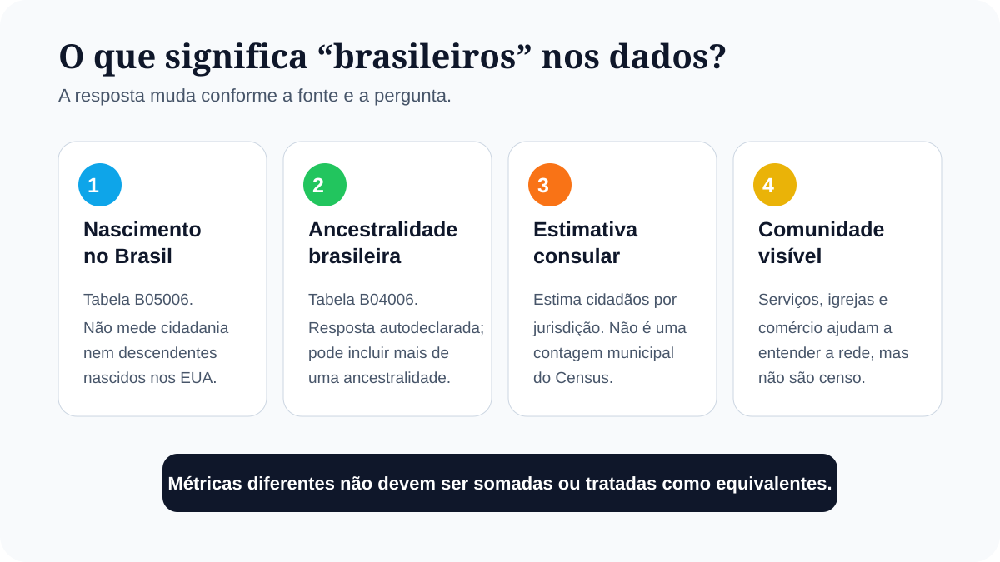
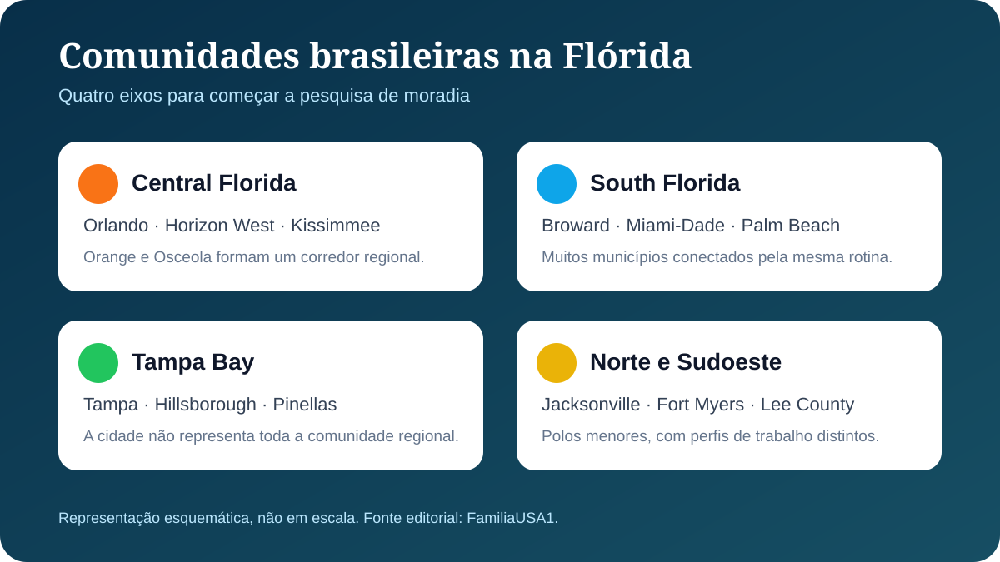

A pergunta “qual cidade da Flórida tem mais brasileiros?” parece simples, mas os bancos de dados não contam uma única população chamada “brasileiros”. O U.S. Census Bureau permite analisar pessoas nascidas no Brasil e pessoas que informaram ancestralidade brasileira. O Itamaraty produz estimativas de cidadãos brasileiros por jurisdição consular. Esses grupos se cruzam, mas não são idênticos.
Além disso, Orlando é uma cidade; Orange é um condado; South Florida é uma região; e a área metropolitana de Miami reúne muitos municípios. Misturar essas unidades cria rankings enganosos. Este guia separa cada nível e usa a comunidade como ponto de partida, não como promessa de que uma cidade será melhor para toda família.

Como identificamos onde há mais brasileiros
A principal base desta revisão é a American Community Survey 2024 de cinco anos. Esse produto reúne 60 meses de respostas e oferece estimativas para todas as áreas geográficas. Usamos duas tabelas detalhadas:
- B05006: local de nascimento da população estrangeira, com a linha “Brazil”. É a melhor aproximação disponível aqui para moradores nascidos no Brasil.
- B04006: pessoas que declararam ancestralidade brasileira. A resposta é autodeclarada e uma pessoa pode informar mais de uma ancestralidade.
Os números são estimativas amostrais, não uma contagem exata. O Census publica uma margem de erro com nível de confiança de 90%. Diferenças pequenas podem não ser estatisticamente significativas, especialmente quando os intervalos se sobrepõem.
O que os dados mostram por cidade
Entre os lugares tabulados pelo Census na Flórida, Orlando apresenta o maior valor pontual para pessoas nascidas no Brasil. Deerfield Beach fica em segundo nessa métrica e passa à frente quando se observa ancestralidade brasileira. Esse contraste explica por que rankings da internet podem apontar cidades diferentes.
| Lugar | Nascidos no Brasil | Ancestralidade brasileira |
|---|---|---|
| Orlando | 10.312 ± 1.744 | 7.457 ± 1.698 |
| Deerfield Beach | 8.376 ± 1.242 | 7.869 ± 1.622 |
| Horizon West (CDP) | 6.776 ± 1.819 | 4.234 ± 1.477 |
| Miami | 5.234 ± 805 | 3.618 ± 788 |
| Jacksonville | 4.094 ± 1.736 | 4.058 ± 1.740 |
| Pompano Beach | 4.012 ± 1.110 | 3.691 ± 1.287 |
| Coconut Creek | 3.480 ± 766 | 2.538 ± 891 |
| Fort Lauderdale | 1.916 ± 375 | 1.141 ± 299 |
Fonte e período: U.S. Census Bureau, ACS 2024 5-year, tabelas B05006 e B04006. Geografia: “place”, que inclui cidades incorporadas e census-designated places (CDPs). Métrica: estimativa ± margem de erro de 90%. A seleção acima mostra lugares relevantes para a intenção desta página e não deve ser lida como cadastro de cidadãos brasileiros.
Horizon West merece uma observação: é um census-designated place, não uma cidade incorporada. Ele faz parte do oeste de Orange County e ajuda a mostrar como a comunidade de Central Florida vai além dos limites municipais de Orlando.
O que muda quando olhamos condados
Para entender a vida regional, o condado muitas vezes é mais útil que a cidade. Pessoas podem morar em um município, trabalhar em outro e usar escolas, serviços e comércio espalhados pelo mesmo corredor urbano.
| Condado | Estimativa | Região associada |
|---|---|---|
| Broward County | 30.890 ± 2.478 | Fort Lauderdale, Deerfield, Pompano, Coconut Creek e outras |
| Orange County | 30.773 ± 3.086 | Orlando, Horizon West e arredores |
| Miami-Dade County | 20.911 ± 1.436 | Miami e municípios do condado |
| Palm Beach County | 17.895 ± 2.017 | Boca Raton, Delray e West Palm Beach |
| Hillsborough County | 5.603 ± 854 | Tampa e arredores |
| Osceola County | 5.003 ± 1.300 | Kissimmee e parte da Grande Orlando |
Fonte e período: U.S. Census Bureau, ACS 2024 5-year, tabela B05006. Geografia: county. Métrica: pessoas estrangeiras cujo local de nascimento informado foi Brasil, estimativa ± margem de erro de 90%.
Broward e Orange têm valores pontuais quase iguais e intervalos sobrepostos. A leitura responsável é que ambos formam grandes polos, não que um deles venceu uma disputa por poucas pessoas. Miami-Dade e Palm Beach completam o eixo mais forte do sul da Flórida.

Principais regiões com comunidades brasileiras
Central Florida: Orlando e cidades vizinhas
Orlando é o principal ponto municipal na métrica de nascimento no Brasil, mas a vida brasileira se espalha por Orange e Osceola counties. Horizon West, Kissimmee, Winter Garden, Clermont e Davenport entram nas pesquisas de famílias que buscam moradia perto da economia de Orlando sem necessariamente morar dentro da cidade.
Para avaliar rotina e orçamento, consulte quanto custa morar em Orlando, compare Kissimmee ou Orlando e conheça os guias de Winter Garden, Clermont e Davenport.
South Florida: Broward, Miami-Dade e Palm Beach
South Florida não é uma cidade. É um corredor regional no qual Broward se destaca tanto pelo total estimado de nascidos no Brasil quanto por municípios com concentração visível, como Deerfield Beach, Pompano Beach e Coconut Creek. Fort Lauderdale funciona como centro regional e conexão de trabalho, aeroporto e serviços.
Ao norte, Palm Beach County inclui Boca Raton, Delray Beach e West Palm Beach. Ao sul, Miami-Dade reúne Miami e muitos outros municípios; por isso, o número do condado é muito maior que o da cidade de Miami.
Aprofunde nos guias de Deerfield Beach, Pompano Beach, Fort Lauderdale, Boca Raton e Miami.
Tampa Bay: comunidade menor, mercado regional amplo
Tampa não aparece entre as primeiras cidades nas estimativas municipais: o ACS indica 879 moradores nascidos no Brasil, com margem de erro de 236. Hillsborough County, porém, chega a 5.603 ± 854. Isso mostra por que observar apenas o limite da cidade pode esconder a distribuição regional.
Quem considera a costa oeste deve separar presença comunitária de decisão de moradia. Veja quanto custa morar em Tampa e o comparativo Orlando ou Tampa para diferentes perfis.
North e Southwest Florida
Jacksonville tem estimativa municipal relevante, mas margem de erro ampla. Fort Myers e Lee County também aparecem nos dados, enquanto outras cidades têm grupos menores ou menos visíveis. Nessas regiões, trabalho, distância, transporte e rede de apoio podem pesar mais do que a quantidade estimada de brasileiros.
Leia os guias de Jacksonville e Fort Myers antes de comparar apenas pelo tamanho da comunidade.
Como escolher uma cidade além da comunidade brasileira
Rede em português pode facilitar os primeiros meses, mas não compensa um aluguel incompatível, um trajeto inviável ou uma escola que não atende à família. Use a comunidade como um critério entre vários.
- Trabalho: pesquise onde estão as vagas compatíveis e simule o trajeto em horário real.
- Moradia: compare aluguel, depósito, utilidades e exigências de crédito por endereço.
- Filhos: confirme a escola vinculada ao imóvel diretamente no distrito escolar.
- Transporte: calcule carro, seguro, combustível, pedágio e manutenção.
- Clima e seguro: verifique risco de enchente, evacuação e custo da cobertura.
- Vida legal: comunidade não substitui status migratório ou autorização de trabalho.
- Rede de apoio: avalie serviços em português sem deixar de construir autonomia em inglês.
Para uma comparação orientada por perfil, use o guia das melhores cidades da Flórida para brasileiros. Esta página responde onde há concentração; o outro artigo ajuda a decidir qual cidade combina com orçamento e rotina.
Planejando sua mudança?
Baixe o checklist gratuito da mudança para os EUA e organize documentos, dinheiro, moradia, escola, carro e os primeiros passos.
Próximo passo
Escolha duas regiões, não apenas duas cidades. Depois compare três endereços reais por aluguel, trabalho, escola, carro, seguro e tempo de deslocamento.
Explorar o hub de cidades da Flórida · Comparar cidades por perfil
Perguntas frequentes
Qual cidade da Flórida tem mais brasileiros?
Depende da métrica. No ACS 2024 de cinco anos, Orlando tem a maior estimativa pontual de moradores nascidos no Brasil entre os lugares da Flórida, com 10.312, enquanto Deerfield Beach tem 8.376. Por ancestralidade brasileira, Deerfield Beach aparece com 7.869 e Orlando com 7.457. As margens de erro se sobrepõem, portanto os dados não sustentam um vencedor absoluto.
Onde há mais brasileiros na Flórida por região?
Os dados por condado destacam dois grandes eixos: Broward e Palm Beach, no sul da Flórida, e Orange e Osceola, na região de Orlando. Miami-Dade também tem uma comunidade numerosa. Esses condados não devem ser comparados diretamente com cidades.
Orlando tem muitos brasileiros?
Sim. O ACS 2024 de cinco anos estima 10.312 moradores nascidos no Brasil em Orlando, com margem de erro de 1.744. Orange County, que inclui Orlando e outras localidades, tem estimativa de 30.773, com margem de erro de 3.086.
Deerfield Beach tem comunidade brasileira?
Sim. Deerfield Beach aparece entre as maiores concentrações municipais nas duas métricas analisadas: nascimento no Brasil e ancestralidade brasileira. A cidade integra o corredor de Broward, condado que lidera a estimativa estadual de moradores nascidos no Brasil por uma pequena diferença sobre Orange County.
Miami é a cidade da Flórida com mais brasileiros?
Não pela estimativa municipal do ACS 2024 de cinco anos. Miami tem estimativa de 5.234 moradores nascidos no Brasil, abaixo de Orlando e Deerfield Beach. Já Miami-Dade County tem 20.911, mas esse número cobre todo o condado, não apenas a cidade de Miami.
Qual é a melhor cidade da Flórida para brasileiros?
Não existe uma única melhor cidade. Comunidade brasileira é apenas um critério. Trabalho, aluguel, escola, transporte, seguro, risco climático e distância da rotina devem pesar mais na decisão final.
Fontes e limitações
- U.S. Census Bureau — ACS 2024 5-year, tabela B05006: local de nascimento da população estrangeira.
- U.S. Census Bureau — ACS 2024 5-year, tabela B04006: pessoas que declararam ancestralidade.
- U.S. Census Bureau — amostra e margem de erro do ACS: interpretação das estimativas e do nível de confiança de 90%.
- U.S. Census Bureau — áreas geográficas publicadas: diferenças entre produtos de um e cinco anos.
- U.S. Census Bureau — orientação sobre dados de ancestralidade: escopo e tabelas disponíveis.
- Ministério das Relações Exteriores — estimativas de brasileiros no exterior: metodologia consular, útil como contexto nacional e por jurisdição, não como ranking municipal do Census.